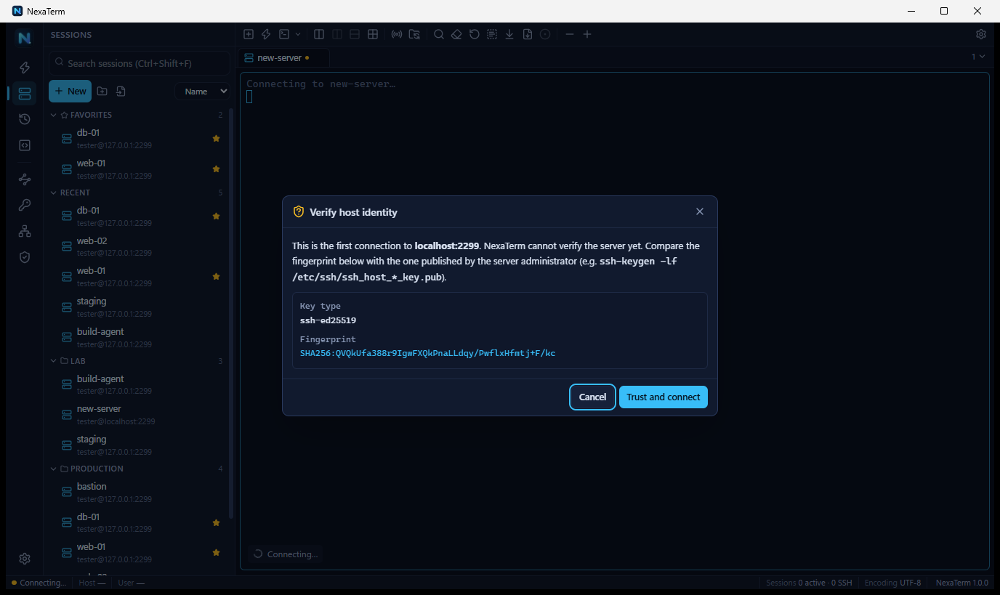
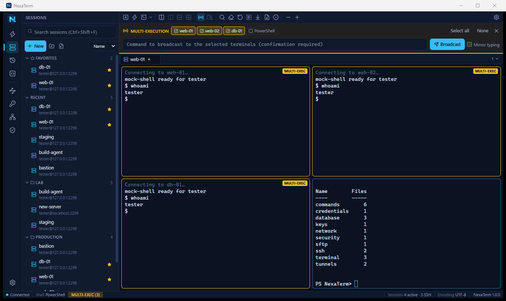

คู่มือการใช้งาน
คู่มือ NexaTerm ฉบับเต็ม
อธิบายทีละขั้นตอน ตั้งแต่ติดตั้งโปรแกรมจนถึงฟังก์ชันขั้นสูง ทุกชื่อปุ่มและเมนูในคู่มือนี้ตรงกับที่เห็นในโปรแกรม (หน้าจอโปรแกรมเป็นภาษาอังกฤษ คู่มือจะเขียนชื่อปุ่มเป็นภาษาอังกฤษตามจริงและอธิบายเป็นภาษาไทย)
01ติดตั้งโปรแกรม
บน Windows 10 / 11
มีให้เลือก 3 แบบ ถ้าไม่แน่ใจให้ใช้แบบแรก
| ไฟล์ | เหมาะกับ |
|---|---|
NexaTerm-Setup-x64-web.exe | คนส่วนใหญ่ ไฟล์เล็ก (ประมาณ 3 MB) ถ้าเครื่องยังไม่มี Microsoft WebView2 ตัวติดตั้งจะดาวน์โหลดให้เอง (Windows 11 และ Windows 10 ที่อัปเดตแล้วมีอยู่แล้ว) |
NexaTerm-Portable-x64.zip | ไม่อยากติดตั้ง หรืออยากพกใส่แฟลชไดรฟ์ แตกไฟล์แล้วเปิดใช้ได้เลย |
NexaTerm-Setup-x64.exe | เครื่องที่ต่ออินเทอร์เน็ตไม่ได้ รวม WebView2 ไว้ในไฟล์ (ไฟล์ใหญ่ประมาณ 290 MB) |
ขั้นตอนติดตั้ง (ตัวติดตั้ง)
- ดาวน์โหลดไฟล์จากหน้าดาวน์โหลด
- ดับเบิลคลิกไฟล์ ถ้า Windows แสดงหน้าจอสีน้ำเงิน Windows protected your PC ให้กด More info แล้วกด Run anyway (ดูคำอธิบายในกรอบด้านล่าง)
- เลือกภาษาของตัวติดตั้ง (English หรือไทย) แล้วกด Next
- เลือกโฟลเดอร์ที่จะติดตั้ง ค่าเริ่มต้นอยู่ในโฟลเดอร์ของบัญชีผู้ใช้ จึงไม่ต้องใช้สิทธิ์ผู้ดูแลระบบ
- เลือกว่าจะสร้างไอคอนบนเดสก์ท็อปหรือไม่ แล้วกด Install
- เมื่อเสร็จ ติ๊ก Run NexaTerm แล้วกด Finish โปรแกรมจะอยู่ใน Start menu ชื่อ NexaTerm
Windows SmartScreen แสดงคำเตือนนี้กับโปรแกรมใหม่ที่ยังมีคนดาวน์โหลดไม่มาก ไม่ได้แปลว่าไฟล์มีไวรัส ไฟล์ทุกตัวของ NexaTerm สร้างจากซอร์สโค้ดบน GitHub โดยอัตโนมัติ
และตรวจสอบได้ด้วยค่า SHA-256 ในไฟล์ SHA256SUMS.txt ที่อยู่ในหน้าดาวน์โหลดเดียวกัน
ถ้าต้องการตรวจ ให้เปิด PowerShell ในโฟลเดอร์ที่ดาวน์โหลดแล้วพิมพ์:
Get-FileHash .\NexaTerm-Setup-x64-web.exe -Algorithm SHA256ตัวเลขที่ได้ต้องตรงกับบรรทัดของไฟล์นั้นใน SHA256SUMS.txt
ใช้รุ่นพกพา (Portable)
- คลิกขวาไฟล์
NexaTerm-Portable-x64.zipเลือก Extract All... ไปไว้ที่ไหนก็ได้ เช่นแฟลชไดรฟ์ - เปิด
NexaTerm.exeในโฟลเดอร์ที่แตกออกมา - ข้อมูลทั้งหมด (session, การตั้งค่า, log) จะเก็บในโฟลเดอร์
portable-data\ข้างโปรแกรม ย้ายทั้งโฟลเดอร์ไปเครื่องอื่นได้
รหัสผ่านที่บันทึกไว้เก็บใน Windows Credential Manager ของเครื่องนั้น ไม่ได้อยู่ใน portable-data\ เมื่อเปิดบนเครื่องใหม่ โปรแกรมจะถามรหัสผ่านอีกครั้งตอนเชื่อมต่อ
บน Linux
รองรับเครื่อง 64 บิตที่มีหน้าจอเดสก์ท็อป (GNOME, KDE, XFCE, Cinnamon ฯลฯ) เลือกไฟล์ตามดิสโทรของคุณ แล้วเปิด Terminal ในโฟลเดอร์ที่ดาวน์โหลด:
| ดิสโทร | คำสั่งติดตั้ง |
|---|---|
| Ubuntu, Debian, Linux Mint, Pop!_OS | sudo apt install ./NexaTerm-x64.deb |
| Fedora, RHEL, Rocky, openSUSE | sudo dnf install ./NexaTerm-x64.rpm (openSUSE ใช้ sudo zypper install ./NexaTerm-x64.rpm) |
| ดิสโทรอื่น ๆ | chmod +x NexaTerm-x64.AppImage แล้ว ./NexaTerm-x64.AppImage |
หลังติดตั้งแบบ .deb หรือ .rpm จะมี NexaTerm ในเมนูแอปของเดสก์ท็อป ถอนการติดตั้งผ่านโปรแกรมจัดการแอปของดิสโทร หรือดูชื่อแพ็กเกจด้วย apt list --installed | grep -i nexa (หรือ rpm -qa | grep -i nexa) แล้วใช้ sudo apt remove / sudo dnf remove ตามด้วยชื่อนั้น
- รหัสผ่านเก็บใน keyring ของเดสก์ท็อป (GNOME Keyring หรือ KWallet) ซึ่งเปิดใช้อยู่แล้วในเดสก์ท็อปทั่วไป
- ใช้ shell ประจำตัวของคุณ (bash, zsh หรือ fish)
- ถ้าจะใช้พอร์ต Serial ต้องอยู่ในกลุ่ม
dialout(ดูหัวข้อ 7)
เปิดโปรแกรมครั้งแรก
ครั้งแรกจะมีหน้าต่าง Welcome to NexaTerm สรุปสามเรื่องสำคัญ: โปรแกรมทำงานแบบออฟไลน์และไม่ส่งข้อมูลการใช้งาน, รหัสผ่านเก็บในที่เก็บรหัสผ่านของระบบ, และทุกเซิร์ฟเวอร์ต้องยืนยัน host key ก่อน มีปุ่มลัดให้เปิดเทอร์มินัล สร้าง session หรือ Quick Connect ได้ทันที ถ้าต้องการดูหน้านี้อีกครั้ง ไปที่ Settings → Show welcome screen again
02รู้จักหน้าจอ

| ส่วน | ใช้ทำอะไร |
|---|---|
| แถบไอคอนซ้ายสุด | สลับมุมมองของแผงด้านข้าง: Quick connect, Sessions, Recent connections, Snippets, Macros และเปิดเครื่องมือเป็นแท็บ: SSH tunnels, SSH keys, Network tools, Known hosts, Settings |
| แผงด้านข้าง | รายการของมุมมองที่เลือก เช่นรายการ session แบบโฟลเดอร์ ซ่อน/แสดงได้โดยคลิกไอคอนเดิมซ้ำ |
| แถบเครื่องมือ | สร้าง session, Quick connect, เปิดเทอร์มินัล (ลูกศร ▾ เลือก shell), แบ่งจอ, Multi-execution, SFTP, SFTP side panel, ค้นหา, ล้างจอ, export, บันทึก log, อัดมาโคร, ขนาดตัวอักษร |
| แถบแท็บ | หนึ่งแท็บต่อหนึ่งกลุ่มเทอร์มินัลหรือเครื่องมือ ดับเบิลคลิกเพื่อเปลี่ยนชื่อ คลิกปุ่มกลางเมาส์เพื่อปิด ตัวเลขด้านขวาเปิดรายการแท็บทั้งหมดพร้อมช่องค้นหา |
| แถบสถานะด้านล่าง | สถานะการเชื่อมต่อ, host, ผู้ใช้, เวลาที่เชื่อมต่อ, จำนวน session ที่เปิดอยู่, encoding และเวอร์ชันโปรแกรม |
วางเมาส์ค้างบนปุ่มใดก็ได้เพื่อดูชื่อปุ่มและคีย์ลัด
03เทอร์มินัลในเครื่อง
กด Ctrl+T หรือปุ่ม New local terminal บนแถบเครื่องมือ จะเปิด shell เริ่มต้นของเครื่องในแท็บใหม่
เลือก shell
คลิกลูกศร ▾ ข้างปุ่ม (Choose shell) จะเห็นทุก shell ที่โปรแกรมตรวจพบ
Windows
Windows PowerShell, PowerShell 7, Command Prompt, Git Bash และ WSL ทุกดิสโทรที่ติดตั้งไว้
Linux
shell ประจำตัวของคุณ (จาก $SHELL) แสดงเป็นรายการแรก ตามด้วย bash, zsh, fish, sh ที่มีในเครื่อง
เปลี่ยน shell ที่เปิดเป็นค่าเริ่มต้นได้ที่ Settings → Default shell
บันทึก shell พิเศษเป็น session
ถ้าใช้โปรแกรมเฉพาะบ่อย ๆ (เช่น Python, Node REPL หรือ shell ที่ต้องมีอาร์กิวเมนต์) ให้สร้าง session ประเภท Local terminal แล้วกรอก Executable path, Arguments และ Starting directory จากนั้นดับเบิลคลิก session เพื่อเปิดได้ทุกครั้ง
คัดลอกและวาง
- ลากเมาส์เลือกข้อความแล้วกด Ctrl+C เพื่อคัดลอก (ถ้าไม่ได้เลือกข้อความ Ctrl+C จะส่งไปหยุดคำสั่งตามปกติ)
- Ctrl+V หรือ Ctrl+Shift+V เพื่อวาง
- คลิกขวาในเทอร์มินัล: ถ้ามีข้อความที่เลือกจะคัดลอก ถ้าไม่มีจะวาง (ปิดได้ในหน้าตั้งค่า)
- ถ้าวางข้อความหลายบรรทัด โปรแกรมจะแสดงข้อความให้ยืนยันก่อน เพราะแต่ละบรรทัดจะถูกรันเป็นคำสั่งทันที
04เชื่อมต่อ SSH ครั้งแรก
ตัวอย่างนี้เชื่อมต่อไปที่เซิร์ฟเวอร์ 192.168.1.10 ผู้ใช้ admin ด้วยรหัสผ่าน
- กด Ctrl+Shift+N หรือปุ่ม New session
- เลือกประเภท SSH
- กรอก Session name เป็นชื่อที่จำง่าย เช่น
Web server - กรอก Host / IP address เป็น
192.168.1.10และ Port เป็น22(ค่าเริ่มต้น) - กรอก Username เป็น
admin - Authentication เลือก Password ช่องรหัสผ่านจะกรอกหรือเว้นว่างก็ได้ ถ้าเว้นว่าง โปรแกรมจะถามทุกครั้งที่เชื่อมต่อ
- กด Save session จะไปอยู่ในรายการด้านซ้าย
- ดับเบิลคลิก session เพื่อเชื่อมต่อ
ยืนยัน host key (ครั้งแรกเท่านั้น)

host key คือ "ลายนิ้วมือ" ของเซิร์ฟเวอร์ ใช้ยืนยันว่าคุณกำลังคุยกับเครื่องจริง ไม่ใช่เครื่องที่ปลอมตัวมาดักรหัสผ่าน
- ดูค่า SHA256:... ในหน้าต่าง
- เทียบกับค่าจริงของเซิร์ฟเวอร์ (ถามผู้ดูแลเซิร์ฟเวอร์ หรือถ้าเข้าเครื่องได้ทางอื่น ให้รัน
ssh-keygen -lf /etc/ssh/ssh_host_ed25519_key.pub) - ถ้าตรงกัน กด Trust and connect โปรแกรมจะจำ key นี้ไว้ ครั้งต่อไปจะไม่ถามอีก
โปรแกรมจะไม่เชื่อมต่อ และแสดงทั้งค่าเก่าและค่าใหม่ อาจเกิดจากเซิร์ฟเวอร์ถูกติดตั้งใหม่ (ปกติ) หรือมีคนดักการเชื่อมต่อ (อันตราย) อย่ากดแทนที่ key จนกว่าจะยืนยันกับผู้ดูแลเซิร์ฟเวอร์แล้ว ดูและลบ key ที่จำไว้ได้ที่ไอคอน Known hosts
รหัสผ่านเก็บที่ไหน
ถ้ากรอกรหัสผ่านใน session หรือติ๊ก Save in ... ตอนที่โปรแกรมถาม รหัสผ่านจะเก็บในที่เก็บรหัสผ่านของระบบปฏิบัติการเท่านั้น (Windows Credential Manager บน Windows, GNOME Keyring หรือ KWallet บน Linux) ไม่อยู่ในฐานข้อมูลของโปรแกรม ไม่อยู่ใน log และไม่ติดไปกับไฟล์ export หรือไฟล์สำรอง ลบรหัสผ่านที่บันทึกไว้ได้โดยแก้ไข session แล้วกด Remove it ใต้ช่องรหัสผ่าน
เชื่อมต่อด้วยคีย์แทนรหัสผ่าน
ใน Authentication เลือก Private key แล้วกดปุ่มรูปโฟลเดอร์เพื่อเลือกไฟล์คีย์ (เช่น id_ed25519) รองรับคีย์ OpenSSH, PEM และ PuTTY .ppk
ถ้าคีย์มี passphrase กรอกในช่อง Key passphrase หรือเว้นว่างให้ถามตอนเชื่อมต่อ บน Linux พิมพ์ path แบบ ~/.ssh/id_ed25519 ได้
ยังไม่มีคีย์? สร้างได้ในโปรแกรม ดูหัวข้อ 15
Quick Connect: เชื่อมต่อครั้งเดียวไม่ต้องบันทึก
กดปุ่ม Quick connect แล้วพิมพ์ ผู้ใช้@โฮสต์:พอร์ต เช่น admin@192.168.1.10:22 แล้วกด Enter
ถ้าใช้แล้วชอบ บันทึกเป็น session ได้ภายหลัง รายการที่เคยเชื่อมต่อดูได้ที่ไอคอน Recent connections
เมื่อการเชื่อมต่อหลุด
ช่องเทอร์มินัลจะแสดงสาเหตุและปุ่ม Reconnect กดเพื่อเชื่อมต่อใหม่ในช่องเดิม ถ้าเครือข่ายไม่เสถียร ตั้ง Keepalive interval ใน session (เช่น 30 วินาที) เพื่อลดการหลุดจากการไม่มีกิจกรรม
05จัดการ session
โฟลเดอร์ รายการโปรด และแท็ก
- สร้างโฟลเดอร์ด้วยปุ่มโฟลเดอร์ในแผง Sessions แล้วลาก session ไปวางบนโฟลเดอร์เพื่อย้าย
- คลิกขวาโฟลเดอร์เพื่อเปลี่ยนชื่อหรือลบ (session ข้างในจะย้ายออกมา ไม่ถูกลบ)
- คลิกขวา session → Favorite เพื่อปักไว้ด้านบน
- ใส่ Tags (comma separated) เช่น
prod, dbแล้วค้นหาด้วยแท็กได้ - Ctrl+Shift+F ค้นหา session จากชื่อ host ผู้ใช้ หรือแท็ก
เมนูคลิกขวาของ session
| Connect / Connect in split pane | เชื่อมต่อในแท็บใหม่ หรือเปิดเป็นช่องใหม่ข้างเทอร์มินัลที่ใช้อยู่ |
| Open SFTP browser | เปิดหน้าจัดการไฟล์ของเซิร์ฟเวอร์นี้ |
| Edit | แก้ไขการตั้งค่า |
| Duplicate | สร้างสำเนา (รหัสผ่านไม่ถูกคัดลอกไปด้วย เพื่อความปลอดภัย) |
| Move to folder | ย้ายโฟลเดอร์ |
| Delete | ลบ session พร้อมรหัสผ่านที่บันทึกไว้ (มีหน้าต่างยืนยัน) |
นำเข้าและส่งออก
ปุ่มนำเข้าในแผง Sessions มีตัวเลือกดังนี้
| ตัวเลือก | รายละเอียด |
|---|---|
| OpenSSH config | อ่าน ~/.ssh/config นำ Host, HostName, User, Port, IdentityFile และ ProxyJump เข้ามา |
| Import from MobaXterm | เลือกไฟล์ .mxtsessions (Export sessions จาก MobaXterm) หรือ MobaXterm.ini session SSH และ Telnet จะนำเข้าพร้อมโครงสร้างโฟลเดอร์ |
| Import from PuTTY (this PC) | อ่าน session ของ PuTTY ในเครื่องนี้โดยตรง (Windows) |
| PuTTY .reg file | ไฟล์ที่ export จาก Registry ของเครื่องอื่น |
| NexaTerm JSON | ไฟล์ที่ export จาก NexaTerm เอง ใช้ย้าย session ระหว่างเครื่อง |
เมื่อนำเข้าเสร็จ โปรแกรมจะสรุปจำนวนที่นำเข้าได้และรายการที่ข้าม (เช่น RDP, VNC ที่ยังไม่รองรับ) ไม่มีการนำเข้ารหัสผ่านจากโปรแกรมอื่น
06SSH ขั้นสูง
ตัวเลือกเหล่านี้อยู่ในหน้าแก้ไข session ส่วนตัวเลือกขั้นสูง
| ตัวเลือก | ใช้เมื่อไร |
|---|---|
| Jump host (ProxyJump) | เซิร์ฟเวอร์ปลายทางเข้าได้ผ่านเครื่องกลาง (bastion) เท่านั้น เลือก session ของเครื่องกลางที่บันทึกไว้ (เครื่องกลางต้องบันทึกรหัสผ่านไว้ หรือใช้คีย์/agent) |
| Connection timeout (s) | รอนานเท่าไรก่อนแจ้งว่าเชื่อมต่อไม่ได้ |
| Connection retries | ลองเชื่อมต่อซ้ำกี่ครั้งเมื่อไม่สำเร็จ |
| Keepalive interval | ส่งสัญญาณทุกกี่วินาทีเพื่อไม่ให้ firewall ตัดการเชื่อมต่อที่ว่าง (0 = ปิด) |
| Startup directory | เข้าโฟลเดอร์นี้ทันทีหลังล็อกอิน |
| Startup command | คำสั่งที่จะรันทันทีหลังล็อกอิน เช่น sudo -i หรือ tmux attach |
| Terminal type | ค่า TERM ที่ส่งให้เซิร์ฟเวอร์ ปกติใช้ xterm-256color |
| Compression (zlib) | บีบอัดข้อมูล ช่วยเมื่อเน็ตช้า |
| Forward SSH agent (ssh -A) | ให้เซิร์ฟเวอร์ใช้คีย์ใน agent ของเครื่องคุณเพื่อ SSH ต่อไปเครื่องอื่น เปิดเฉพาะกับเซิร์ฟเวอร์ที่ไว้ใจเท่านั้น |
| X11 forwarding | แสดงโปรแกรมหน้าต่างกราฟิกของ Linux บนเครื่องคุณ (ดูด้านล่าง) |
| Follow terminal folder in the SFTP side panel | ให้แผง SFTP ข้างเทอร์มินัลเปลี่ยนโฟลเดอร์ตามคำสั่ง cd (ดูหัวข้อ 8) |
ล็อกอินสองขั้นตอน (รหัสผ่าน + รหัส OTP)
- ตั้ง Authentication เป็น Keyboard-interactive
- ถ้าบันทึกรหัสผ่านไว้ รหัสผ่านจะตอบคำถามแรกให้อัตโนมัติ
- เมื่อเซิร์ฟเวอร์ถามรหัส OTP โปรแกรมจะแสดงหน้าต่างให้กรอก (เช่นรหัส 6 หลักจากแอป Authenticator) กรอกแล้วกด Enter
ใช้ SSH agent
Windows
- เปิด PowerShell แบบ Administrator แล้วรัน
Set-Service ssh-agent -StartupType AutomaticStart-Service ssh-agent - เพิ่มคีย์:
ssh-add $HOME\.ssh\id_ed25519 - ใน session เลือก SSH agent
Linux
- เดสก์ท็อปส่วนใหญ่เปิด agent ไว้แล้ว ตรวจด้วย
echo $SSH_AUTH_SOCK - เพิ่มคีย์:
ssh-add ~/.ssh/id_ed25519 - ใน session เลือก SSH agent
X11 forwarding: เปิดโปรแกรมกราฟิกจากเซิร์ฟเวอร์
Windows
- ติดตั้ง X server ฟรี เช่น VcXsrv หรือ Xming (หรือ X410 จาก Microsoft Store)
- ติ๊ก X11 forwarding ใน session โปรแกรมจะแสดงสถานะว่าพบ X server หรือไม่ และมีปุ่มสั่งเปิด X server ที่ติดตั้งไว้ให้
- เชื่อมต่อแล้วลองรัน
xclockหรือxeyes
Linux
- ไม่ต้องติดตั้งอะไรเพิ่ม เดสก์ท็อปมี X server (หรือ XWayland) อยู่แล้ว
- ติ๊ก X11 forwarding ใน session
- เชื่อมต่อแล้วรัน
xclockหน้าต่างจะเปิดบนจอของคุณ
เซิร์ฟเวอร์ต้องตั้ง X11Forwarding yes ใน /etc/ssh/sshd_config และติดตั้งแพ็กเกจ xauth ไว้ ความปลอดภัย: เซิร์ฟเวอร์จะได้รับเพียงรหัสชั่วคราวแบบสุ่ม ไม่เห็นรหัสจริงของหน้าจอคุณ
07Telnet และ Serial
Telnet
สร้าง session ใหม่ เลือกประเภท Telnet กรอก host และ port (ค่าเริ่มต้น 23) ใช้กับอุปกรณ์เครือข่ายรุ่นเก่า
Telnet ไม่เข้ารหัส รหัสผ่านและทุกอย่างที่พิมพ์ส่งเป็นข้อความธรรมดา ใช้ในเครือข่ายภายในที่ไว้ใจได้เท่านั้น ถ้าอุปกรณ์รองรับ SSH ให้ใช้ SSH
Serial (สาย console, USB-to-Serial)
- เสียบสาย แล้วสร้าง session ใหม่ ประเภท Serial
- ช่อง Port จะแสดงพอร์ตที่ตรวจพบ: บน Windows เป็น
COM3,COM4... บน Linux เป็น/dev/ttyUSB0,/dev/ttyACM0หรือพิมพ์เองก็ได้ - ตั้ง Speed (baud) ตามอุปกรณ์ อุปกรณ์เครือข่ายส่วนใหญ่ใช้
9600บอร์ดพัฒนามักใช้115200 - Data bits 8, Parity none, Stop bits 1, Flow control none เป็นค่าที่ใช้กันมากที่สุด (เรียกว่า 8N1)
- บันทึกแล้วดับเบิลคลิกเพื่อเปิด กด Enter หนึ่งครั้งเพื่อให้อุปกรณ์แสดง prompt
เพิ่มผู้ใช้ของคุณเข้ากลุ่ม dialout แล้วออกจากระบบและเข้าใหม่หนึ่งครั้ง
sudo usermod -aG dialout $USER(Arch Linux ใช้กลุ่ม uucp)
08SFTP รับส่งไฟล์

เปิด SFTP
- ระหว่างใช้เทอร์มินัล SSH กดปุ่ม Open SFTP for the active SSH terminal บนแถบเครื่องมือ (ใช้การเชื่อมต่อเดิม ไม่ต้องล็อกอินใหม่)
- หรือคลิกขวา session → Open SFTP browser
การใช้งานพื้นฐาน
| เข้าโฟลเดอร์ | ดับเบิลคลิกโฟลเดอร์ หรือพิมพ์ path ในแถบด้านบนแล้วกด Enter ใช้ปุ่มย้อนกลับ/ถัดไป/ขึ้นบน/หน้าแรกได้ |
| อัปโหลด | ลากไฟล์หรือโฟลเดอร์จาก File Explorer มาวาง หรือกดปุ่มอัปโหลดไฟล์/อัปโหลดโฟลเดอร์ |
| ดาวน์โหลด | คลิกขวาไฟล์หรือโฟลเดอร์ → Download แล้วเลือกที่เก็บในเครื่อง |
| แก้ไขไฟล์ข้อความ | ดับเบิลคลิกไฟล์ จะเปิดในแท็บแก้ไข กด Ctrl+S เพื่อบันทึกกลับไปที่เซิร์ฟเวอร์ |
| สร้าง / เปลี่ยนชื่อ / ลบ | ปุ่มบนแถบเครื่องมือหรือคลิกขวา การลบทุกครั้งจะถามยืนยันก่อน การลบโฟลเดอร์จะลบทุกอย่างข้างใน |
| กรอง / เรียง | พิมพ์ในช่องกรองเพื่อหาไฟล์ในโฟลเดอร์ คลิกหัวคอลัมน์เพื่อเรียง |
การรับส่งไฟล์ทำทีละรายการตามคิว แสดงความคืบหน้าและกดยกเลิกได้ ถ้ายกเลิก ไฟล์ที่ส่งไม่ครบจะถูกลบทิ้ง และโปรแกรมจะไม่เขียนทับไฟล์ที่มีอยู่โดยไม่ถามก่อน การบันทึกไฟล์ในตัวแก้ไขจะเขียนเป็นไฟล์ชั่วคราวก่อนแล้วค่อยแทนที่ไฟล์เดิม ถ้าเน็ตหลุดระหว่างบันทึก ไฟล์เดิมจะไม่เสียหาย
เปลี่ยนสิทธิ์ไฟล์ (chmod / chown)
- คลิกขวาไฟล์หรือโฟลเดอร์ → Permissions and owner
- ติ๊กช่อง อ่าน/เขียน/รัน ของเจ้าของ กลุ่ม และคนอื่น หรือพิมพ์เป็นตัวเลข เช่น
644หรือ755 - ถ้าเป็นโฟลเดอร์ เลือกได้ว่าจะเปลี่ยนทุกอย่างข้างในด้วย
- เปลี่ยนเจ้าของด้วยเลข uid/gid ได้ (มักต้องเป็น root)
แผง SFTP ข้างเทอร์มินัล
กดปุ่ม SFTP side panel บนแถบเครื่องมือ จะเปิดรายการไฟล์ข้างเทอร์มินัล SSH ที่ใช้อยู่ ทำงานกับไฟล์และพิมพ์คำสั่งได้ในหน้าจอเดียว
ถ้าเปิดตัวเลือก Follow terminal folder in the SFTP side panel ใน session แผงจะเปลี่ยนโฟลเดอร์ตามเมื่อคุณพิมพ์ cd (รองรับ bash และ zsh บนเซิร์ฟเวอร์)
09SSH tunnel (port forwarding)

tunnel ใช้เข้าถึงบริการที่อยู่หลังเซิร์ฟเวอร์ SSH อย่างปลอดภัย เช่นฐานข้อมูลที่เปิดให้เข้าได้เฉพาะในเครือข่ายภายใน
ตัวอย่าง: เข้าฐานข้อมูล PostgreSQL ภายในบริษัท
สมมุติฐานข้อมูลอยู่ที่ db.internal:5432 ซึ่งเข้าได้จากเซิร์ฟเวอร์ Web server เท่านั้น
- คลิกไอคอน SSH tunnels แล้วกด New tunnel
- เลือกประเภท Local (-L)
- เลือก session ที่จะใช้เป็นทางผ่าน:
Web server - พอร์ตในเครื่อง:
127.0.0.1พอร์ต15432 - ปลายทาง:
db.internalพอร์ต5432 - บันทึกแล้วกด Start เมื่อสถานะเป็นสีเขียว ให้โปรแกรมฐานข้อมูลเชื่อมต่อไปที่
127.0.0.1:15432
ประเภทของ tunnel
| ประเภท | ทำอะไร | ตัวอย่าง |
|---|---|---|
| Local (-L) | เปิดพอร์ตในเครื่องคุณ ส่งต่อไปยังปลายทางที่เซิร์ฟเวอร์เข้าถึงได้ | เข้าฐานข้อมูล หน้าเว็บผู้ดูแล |
| Remote (-R) | เปิดพอร์ตบนเซิร์ฟเวอร์ ส่งกลับมายังเครื่องที่คุณเข้าถึงได้ | ให้เซิร์ฟเวอร์เรียกเว็บที่รันอยู่บนเครื่องคุณ |
| Dynamic (-D) | สร้าง SOCKS5 proxy ในเครื่องคุณ | ตั้งเบราว์เซอร์ใช้ proxy 127.0.0.1:1080 เพื่อเปิดเว็บภายในผ่านเซิร์ฟเวอร์ |
tunnel ทำงานเฉพาะตอนที่กด Start และแต่ละ tunnel ใช้การเชื่อมต่อ SSH ของตัวเอง โปรแกรมแสดงจำนวนการเชื่อมต่อที่ผ่าน tunnel และเตือนถ้าพอร์ตในเครื่องถูกโปรแกรมอื่นใช้อยู่
10เครื่องมือเครือข่าย

คลิกไอคอน Network tools ทุกเครื่องมือทำงานเมื่อกดปุ่มเท่านั้น และกดยกเลิกได้
| Ping | ตรวจว่าเครื่องปลายทางตอบสนองหรือไม่และใช้เวลาเท่าไร |
| Traceroute | ดูเส้นทางที่ข้อมูลวิ่งผ่านไปถึงปลายทาง ใช้หาว่าช้าหรือหลุดที่จุดไหน (Linux ต้องมี traceroute หรือ tracepath) |
| DNS lookup | แปลงชื่อโดเมนเป็น IP |
| Reverse DNS | แปลง IP กลับเป็นชื่อ |
| TCP port test | ตรวจว่าพอร์ตบนเครื่องปลายทางเปิดอยู่หรือไม่ (ทีละพอร์ต ไม่ใช่การสแกน) |
| Local interfaces | ดู IP ของเครื่องคุณทุกการ์ดเครือข่าย |
| Public IP | ดู IP สาธารณะของคุณ (เชื่อมต่อไปที่ api.ipify.org เฉพาะตอนกดปุ่ม) |
11แบ่งหน้าจอและแท็บ
- ปุ่ม Split เพิ่มช่องเทอร์มินัลในแท็บเดียวกัน ได้สูงสุด 4 ช่อง
- ปุ่ม Layout: side by side / Layout: stacked / Four-pane grid เปลี่ยนการจัดวาง
- ลากเส้นแบ่งระหว่างช่องเพื่อปรับขนาด
- คลิกขวา session → Connect in split pane เพื่อเปิดเซิร์ฟเวอร์ข้างช่องปัจจุบัน
- ดับเบิลคลิกชื่อแท็บเพื่อเปลี่ยนชื่อ คลิกปุ่มกลางเมาส์เพื่อปิดแท็บ
- ถ้าปิดแท็บที่มี SSH เชื่อมต่ออยู่ โปรแกรมจะถามยืนยันก่อน (ปิดการถามได้ในหน้าตั้งค่า)
ค้นหา บันทึก และ export
- Ctrl+F ค้นหาข้อความในเทอร์มินัล Enter ไปผลถัดไป Shift+Enter ย้อนกลับ Esc ปิด
- ปุ่ม Export terminal output to a file บันทึกข้อความทั้งหมดที่อยู่บนจอเป็นไฟล์
- ปุ่มบันทึก log เริ่มเขียนทุกอย่างที่แสดงลงไฟล์ต่อเนื่องจนกว่าจะกดหยุด
- โปรแกรมไฮไลต์คำว่า error, warning, success และ IP address ให้อัตโนมัติ (ปิดได้ในหน้าตั้งค่า)
12สั่งหลายเครื่องพร้อมกัน (Multi-execution)

- เปิดเทอร์มินัลของทุกเครื่องที่ต้องการ (ในแท็บเดียวกันหรือต่างแท็บก็ได้)
- กดปุ่ม Multi-execution บนแถบเครื่องมือ
- ติ๊กเลือกเทอร์มินัลเป้าหมาย
- พิมพ์คำสั่ง แล้วกด Broadcast
- โปรแกรมแสดงรายชื่อเครื่องทั้งหมดให้ตรวจก่อนส่ง ถ้าคำสั่งอันตราย (เช่น
rm -rf,shutdown,reboot) จะมีคำเตือนสีแดง
โหมด Mirror typing ส่งทุกปุ่มที่พิมพ์ในช่องหนึ่งไปยังช่องอื่นที่เลือกทันที เหมาะกับการแก้ไฟล์เดียวกันในหลายเครื่อง ระวังการใช้กับคำสั่งที่ไม่ควรรันซ้ำ
13Snippets: เก็บคำสั่งที่ใช้บ่อย

- คลิกไอคอน Command snippets แล้วกด New
- ตั้งชื่อ เลือกหมวด และพิมพ์คำสั่ง
- ส่วนที่ต้องเปลี่ยนทุกครั้ง ให้เขียนเป็นตัวแปรในวงเล็บปีกกาคู่ เช่น
journalctl -u {{service:nginx}} --since "{{since:1 hour ago}}"{{service:nginx}}หมายถึงตัวแปรชื่อ service ค่าเริ่มต้น nginx - เวลาใช้ คลิก snippet โปรแกรมจะถามค่าตัวแปร แสดงคำสั่งที่จะรันจริงและเทอร์มินัลเป้าหมาย แล้วค่อยส่ง
14Macros: อัดแล้วเล่นซ้ำ
macro ต่างจาก snippet ตรงที่เก็บทุกปุ่มที่กดรวมถึงช่วงเวลาที่รอ เหมาะกับขั้นตอนที่ต้องตอบโต้ เช่นเข้าเมนูของอุปกรณ์เครือข่าย
- คลิกในเทอร์มินัลที่จะอัด แล้วกดปุ่มอัดมาโคร (ไอคอนสเลตภาพยนตร์) บนแถบเครื่องมือ
- พิมพ์ตามปกติ โปรแกรมจะจำทั้งตัวอักษรและการเว้นช่วง
- กดปุ่มเดิมอีกครั้งเพื่อหยุด แล้วตั้งชื่อ macro
- เปิดแผง Macros จากแถบไอคอนซ้าย เลือก macro แล้วกดเล่น โปรแกรมจะแสดงเนื้อหาทั้งหมดให้ตรวจก่อนเสมอ
15จัดการคีย์ SSH

สร้างคีย์และใช้ล็อกอินแทนรหัสผ่าน
- คลิกไอคอน SSH keys แล้วกดสร้างคีย์ใหม่
- เลือกชนิด Ed25519 (แนะนำ) หรือ RSA สำหรับเซิร์ฟเวอร์เก่ามาก
- ตั้ง passphrase เพื่อป้องกันคีย์หากไฟล์หลุดออกไป (แนะนำ)
- กดคัดลอก public key
- ล็อกอินเซิร์ฟเวอร์ด้วยรหัสผ่านครั้งสุดท้าย แล้วรัน (วาง public key แทนข้อความในเครื่องหมายคำพูด):
mkdir -p ~/.ssh && chmod 700 ~/.ssh echo "ssh-ed25519 AAAA... you@pc" >> ~/.ssh/authorized_keys chmod 600 ~/.ssh/authorized_keys - แก้ไข session ให้ Authentication เป็น Private key แล้วเลือกไฟล์คีย์ที่สร้าง
หน้านี้ยังใช้นำเข้าคีย์ที่มีอยู่แล้ว ดูและ export public key เปลี่ยนหรือลบ passphrase และตรวจว่าไฟล์คีย์เสียหายหรือไม่
อย่าส่งไฟล์ private key ให้ใคร ส่งได้เฉพาะ public key (บรรทัดที่ขึ้นต้นด้วย ssh-ed25519 หรือ ssh-rsa)
16ตั้งค่าโปรแกรม
คลิกไอคอน Settings ล่างสุดของแถบไอคอน การเปลี่ยนแปลงมีผลทันที
| ตัวเลือก | คำอธิบาย |
|---|---|
| Application theme | ธีมมืดหรือสว่างของโปรแกรม |
| Terminal color theme | ชุดสีของเทอร์มินัล (มี 4 แบบ) |
| Font family / Font size / Line height | แบบอักษร ขนาด และระยะบรรทัดของเทอร์มินัล |
| Cursor style / Blinking cursor | รูปแบบเคอร์เซอร์ (บล็อก ขีดล่าง เส้นตั้ง) และการกะพริบ |
| Scrollback lines | จำนวนบรรทัดย้อนหลังที่เลื่อนขึ้นไปดูได้ |
| Copy on select | คัดลอกทันทีเมื่อลากเลือกข้อความ |
| Right-click copies selection / pastes | คลิกขวาเพื่อคัดลอก/วาง |
| Send Ctrl+W / Ctrl+T to the shell | เปิดไว้ (ค่าเริ่มต้น) Ctrl+W ใช้ลบคำใน bash ได้ ปิดแล้ว Ctrl+W จะปิดแท็บแทน |
| Confirm before closing connected SSH tabs | ถามก่อนปิดแท็บที่ยังเชื่อมต่ออยู่ |
| Confirm before pasting several lines | ถามก่อนวางข้อความหลายบรรทัด |
| Highlight errors, warnings and IP addresses in output | ไฮไลต์คำสำคัญในผลลัพธ์ |
| Default shell | shell ที่เปิดเมื่อกด Ctrl+T |
| Back up / Restore database | สำรองและกู้คืนข้อมูล (ดูหัวข้อ 18) |
| Show welcome screen again | แสดงหน้าต้อนรับอีกครั้ง |
17คีย์ลัดทั้งหมด
| คีย์ | การทำงาน |
|---|---|
| Ctrl+Shift+N | สร้าง session ใหม่ |
| Ctrl+T / Ctrl+Shift+T | เปิดเทอร์มินัลใหม่ |
| Ctrl+W / Ctrl+Shift+W | ปิดแท็บ |
| Ctrl+Tab / Ctrl+Shift+Tab | ไปแท็บถัดไป / ก่อนหน้า |
| Ctrl+F | ค้นหาในเทอร์มินัล |
| Ctrl+Shift+F | ค้นหา session |
| Ctrl+C (เมื่อเลือกข้อความ) | คัดลอก |
| Ctrl+V | วาง |
| Ctrl+Shift+C / Ctrl+Shift+V | คัดลอก / วาง เสมอ (ไม่ส่งไปที่ shell) |
| Ctrl++ / Ctrl+- / Ctrl+0 | ขยาย / ย่อ / คืนขนาดตัวอักษร |
| Ctrl+S (ในตัวแก้ไขไฟล์) | บันทึกไฟล์กลับไปที่เซิร์ฟเวอร์ |
ขณะพิมพ์ในเทอร์มินัล Ctrl+W และ Ctrl+T จะส่งให้ shell ตามค่าเริ่มต้น ใช้แบบมี Shift เพื่อสั่งโปรแกรมแทน
18ข้อมูล สำรอง และรุ่นพกพา
ข้อมูลเก็บที่ไหน
| ข้อมูล | Windows (ติดตั้ง) | Linux | รุ่นพกพา |
|---|---|---|---|
| session, การตั้งค่า, snippet, tunnel | %APPDATA%\NexaTerm\nexaterm.db | ~/.config/NexaTerm/nexaterm.db | portable-data\ |
| log ของโปรแกรม | %APPDATA%\NexaTerm\logs | ~/.config/NexaTerm/logs | portable-data\logs |
| รหัสผ่าน | Windows Credential Manager | GNOME Keyring / KWallet | Windows Credential Manager ของเครื่องที่ใช้ |
log ของโปรแกรมจะปิดบังรหัสผ่านก่อนเขียนเสมอ
สำรองและกู้คืน
- Settings → Back up database เลือกที่เก็บไฟล์สำรอง
- ย้ายไปเครื่องใหม่: ติดตั้ง NexaTerm แล้ว Restore database เลือกไฟล์สำรอง
- ก่อนกู้คืน โปรแกรมจะเก็บสำเนาข้อมูลปัจจุบันไว้ให้อัตโนมัติ
ไฟล์สำรองไม่มีรหัสผ่านอยู่ข้างใน หลังกู้คืนโปรแกรมจะถามรหัสผ่านใหม่ตอนเชื่อมต่อครั้งแรก
ถอนการติดตั้ง
- Windows: Settings → Apps → NexaTerm → Uninstall ระหว่างถอน ติ๊ก ลบข้อมูลของโปรแกรมได้ถ้าต้องการลบ session ทั้งหมดด้วย
- Linux: ลบผ่านโปรแกรมจัดการแอป หรือ
sudo apt remove/sudo dnf removeตามด้วยชื่อแพ็กเกจ (ดูวิธีหาชื่อในหัวข้อ 1) ข้อมูลใน~/.config/NexaTermยังอยู่ ลบเองได้ถ้าไม่ต้องการ - รหัสผ่านที่ค้างใน Windows Credential Manager ค้นหาด้วยคำว่า
NexaTerm/ในหัวข้อ Windows Credentials
19แก้ปัญหาที่พบบ่อย
Connection refused
เครื่องปลายทางไม่ได้เปิดบริการ SSH ที่พอร์ตนั้น ตรวจว่าพิมพ์พอร์ตถูก (ปกติ 22) และบนเซิร์ฟเวอร์รัน sudo systemctl status ssh (หรือ sshd)
Timeout / เชื่อมต่อนานแล้วขึ้นหมดเวลา
ไปไม่ถึงเครื่องปลายทาง อาจเพราะ IP ผิด เครื่องปิดอยู่ หรือ firewall บล็อก ลองใช้ Network tools → Ping และ TCP port test กับพอร์ต 22 ถ้าต้องผ่าน VPN ให้เชื่อมต่อ VPN ก่อน
Authentication failed / รหัสผ่านไม่ถูกต้อง
- ตรวจชื่อผู้ใช้ (ตัวพิมพ์เล็ก-ใหญ่มีผล)
- ถ้าบันทึกรหัสผ่านเก่าไว้ แก้ไข session → Remove it แล้วเชื่อมต่อใหม่ให้โปรแกรมถาม
- เซิร์ฟเวอร์บางเครื่องปิดการล็อกอินด้วยรหัสผ่าน ต้องใช้คีย์ (ดูหัวข้อ 15)
- ถ้าเซิร์ฟเวอร์ถามรหัส OTP ให้ใช้ Keyboard-interactive
Host key changed / เตือนว่า key ของเซิร์ฟเวอร์เปลี่ยน
ดูกรอบสีแดงในหัวข้อ 4 ยืนยันกับผู้ดูแลเซิร์ฟเวอร์ก่อนเสมอ ถ้าเซิร์ฟเวอร์ถูกติดตั้งใหม่จริง ลบ key เก่าที่ Known hosts แล้วเชื่อมต่อใหม่
No SSH agent found / OpenSSH Authentication Agent is not running
agent ยังไม่ได้เปิดหรือยังไม่มีคีย์ ทำตามขั้นตอนในหัวข้อ ใช้ SSH agent
Serial: Permission denied (Linux) หรือ port is in use
Linux: เพิ่มผู้ใช้เข้ากลุ่ม dialout แล้วออกจากระบบและเข้าใหม่ ถ้าขึ้นว่าพอร์ตถูกใช้อยู่ ให้ปิดโปรแกรมอื่นที่เปิดพอร์ตเดียวกัน (เช่น PuTTY, Arduino IDE)
X11: เปิดโปรแกรมกราฟิกแล้วไม่ขึ้นหน้าต่าง
- Windows: ตรวจว่า X server (VcXsrv/Xming/X410) เปิดอยู่ หน้าแก้ไข session จะแสดงสถานะให้
- เซิร์ฟเวอร์ต้องมี
X11Forwarding yesและติดตั้งxauth - หลังเชื่อมต่อ ลอง
echo $DISPLAYบนเซิร์ฟเวอร์ ควรได้ค่าเช่นlocalhost:10.0
Linux: บันทึกรหัสผ่านไม่ได้ (Secret Service / keyring)
เดสก์ท็อปต้องมี keyring ทำงานอยู่ ติดตั้งด้วย sudo apt install gnome-keyring (หรือใช้ KWallet บน KDE) แล้วออกจากระบบและเข้าใหม่ ถ้า keyring ถูกล็อก ระบบจะถามรหัสผ่านเพื่อปลดล็อก ระหว่างนี้ยังเชื่อมต่อได้โดยพิมพ์รหัสผ่านทุกครั้ง
Windows: เปิดโปรแกรมแล้วขึ้นว่าไม่พบ WebView2
ติดตั้ง Microsoft Edge WebView2 Runtime จาก เว็บไซต์ Microsoft หรือใช้ตัวติดตั้งแบบออฟไลน์ NexaTerm-Setup-x64.exe ที่รวม WebView2 ไว้แล้ว
ตัวติดตั้งแบบออฟไลน์หยุดกลางคัน
ตัวติดตั้งขนาดใหญ่ต้องใช้พื้นที่ว่างชั่วคราวประมาณ 300 MB ในไดรฟ์ C: ลบไฟล์ใน %TEMP% หรือเพิ่มพื้นที่ว่างแล้วลองใหม่ หรือใช้ตัวติดตั้งแบบ web ที่มีขนาดเล็ก
ตรวจสอบปัญหาด้วยตัวเอง (self-test)
โปรแกรมมีโหมดตรวจสอบตัวเอง ตรวจฐานข้อมูล ที่เก็บรหัสผ่าน การเปิด shell และไฟล์ log
# Windows (PowerShell ในโฟลเดอร์ที่ติดตั้ง)
.\NexaTerm.exe --self-test
# Linux
nexaterm --self-testแนบผลลัพธ์มาด้วยเมื่อแจ้งปัญหาบน GitHub
ยังแก้ไม่ได้? เปิด issue บน GitHub บอกระบบปฏิบัติการ เวอร์ชัน NexaTerm (ดูได้ที่แถบสถานะด้านล่าง) และข้อความ error ที่เห็น อย่าแนบรหัสผ่านหรือ private key